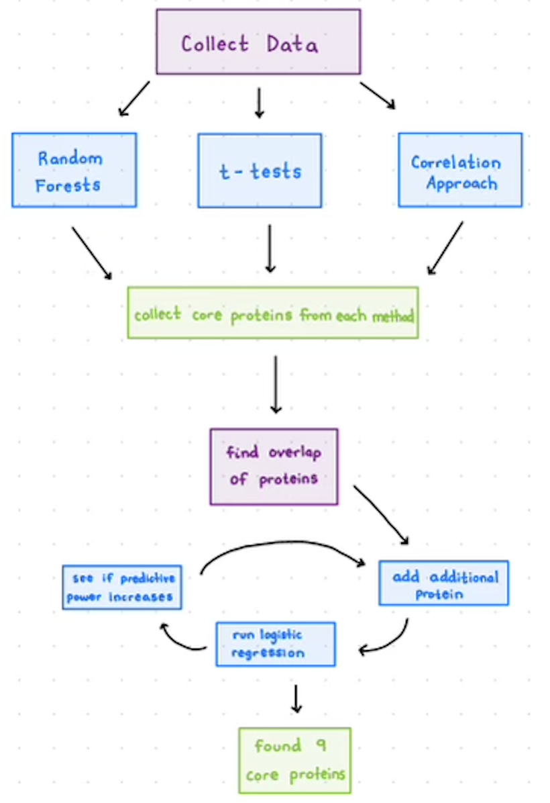
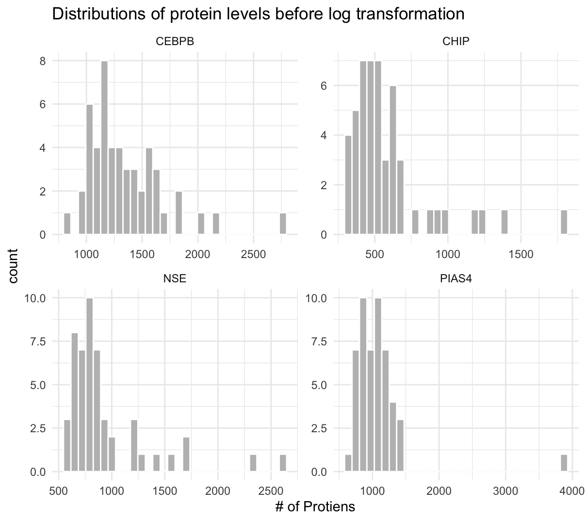
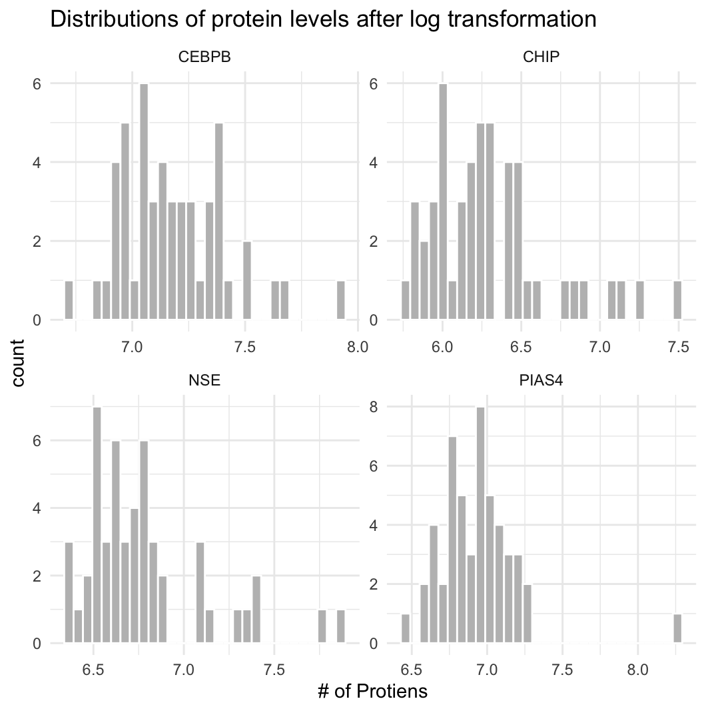
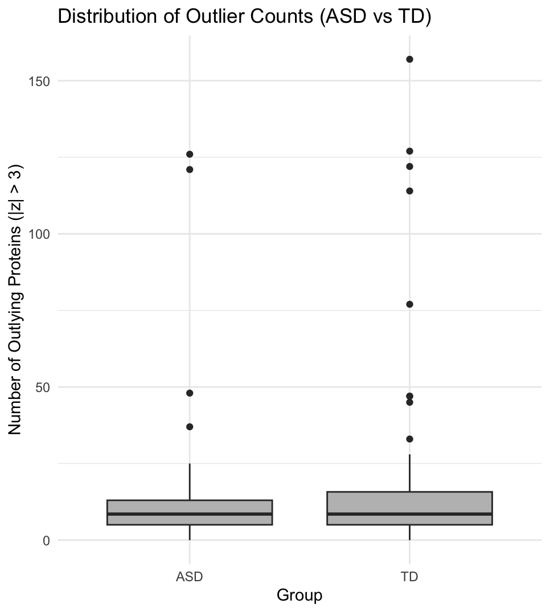

Biomarkers of ASD
Module 1 - Table 1
Abstract
In this report, we analyze methods used to identify protein biomarkers for autism spectrum disorder (ASD) in children. To obtain the data blood samples were collected from 76 boys with ASD and 78 typically developing (TD) boys, as well as several additional characteristics. The baseline, in-class analysis for this data involved selecting 10 significant proteins from multiple t-testing, selecting another 10 significant proteins from random forest, and finally, intersecting the two panels and fitting a logistic regression model, used to create a classifier (that classified children as having ASD or being TD). We used a log transformation on our raw data, which provided a more Gaussian spread and minimized the impact of outliers (which is why the technique was used for the cleaned dataset we worked with). We used three methodologies that varied from the one done in our class. We split our data into training and testing sets prior to analysis, we increased our initial significant protein panel from ten to fifteen, and we used a fuzzy intersection, rather than a hard intersection, for the final protein panel used for a logistic regression. These three methods allowed us to have increased specificity in comparison to the baseline in-class analysis. We obtained our highest performing classifier from running the baseline in-class analysis code to the end of the logistic regression, and then viewing a summary of the glm() function. From observing p-values, we removed two proteins and the intercept from our panel, and fitted the logistic regression again. From that, we obtained a classifier that outperformed the in-class analysis. The panel consisted of proteins Derm, RELT, and IgD.
Dataset
The data for this week’s module come from the paper, Blood biomarker discovery for autism spectrum disorder: A proteomic analysis (Hewitson et al., 2021). This study investigated autism spectrum disorder (ASD) and aimed to identify a panel of proteins that could serve as biomarkers for ASD risk. Blood samples were collected from 76 boys with ASD and 78 typically developing (TD) boys, with ages spanning 18-months to 8 years. The mean age of the ASD participants was 5.6 years, and the mean age of TD participants was 5.7 years. Additional characteristics were recorded, including ethnicity of the participants, presence of co-morbid conditions, and use of prescription medications. For the ASD group, each participant was given an Autism Diagnostic Observation Schedule (ADOS) total score, which provided a continuous measure of overall ASD symptom severity.
In order to quantify protein abundance in the blood samples, a proteomic analysis of serums was performed using SomaLogic’s SOMAScanTM assay 1.3K platform, and a total of 1,317 proteins were measured. After quality control procedures, 192 proteins that did not meet reliability standards were excluded, leaving 1,125 proteins for analysis. The protein abundance data were normalized by first applying a log10 transformation and then a z-transformation. To deal with outliers, any z-transformed values less than -3 and greater than 3 were clipped to -3 and 3, respectively.
Summary of published analysis

Findings
Impact of preprocessing and outliers
First we examined the effect of applying a log transformation to the raw protein data. To visualize why this transformation was useful, we created barplots (using the raw data) of the four proteins: CEBPB, CHIP, NSE, and PIAS4. In the plots, the x axis represents the number of proteins found in each subject, and the y axis shows the frequency of subjects with that count.
Before the log transformation, the distributions were right skewed, which means that a couple subjects had very high protein levels, causing the mean to exceed the median. After applying the log transformation, the distribution becomes more centered and approximately normal. This normalization helps de-influence the extreme outliers, allowing for better statistical analysis.


Second we analyzed the outliers in the dataset. Outliers were identified by protein measurements having an absolute z-score greater than three, representing values more than three standard deviations away from the mean. We identified the outliers per subject by tabulating the number of protein outliers for each individual. Some subjects had quite high numbers of outliers (up to 157), while the mean number of outliers per subject was 15.45 and the median was 8.5. This indicates that while most subjects had a small number of outliers, a few had very high counts.
We also compared outliers across the two groups: ASD and TD. As shown in the boxplot below, the ASD group had fewer outliers than the TD group. Additionally, both the mean and third quartile for the ASD group were smaller than the TD group, suggesting less variability and fewer extremes in the ASD group.

Methodological variations
We built upon Hewitson et al. (2021) process to find a panel of proteins that would help early detection of autism spectrum disorder (ASD). To find a panel of proteins we used a couple statistical approaches: a two-sample t-tests to find proteins that differed the most between ASD and TD groups and a Random Forest classifier to rank proteins based on how much they contributed to classification accuracy. We then combined the top results from each method using a hard intersection. Using the overlapping proteins, we built a logistic regression model on the training data and evaluated it on the held-out test set. Using this baseline process, we examined three methodological variations: changing the training/testing split to 70/30, increasing the size of the protein panel, and using a fuzzy intersection instead of a hard intersection. The results are explained below.
For our first methodological variation, we partitioned our data into testing and training subsets before conducting any testing. We randomly selected 70% of the data for training, and set aside 30% for testing. Then, we proceeded to conduct our multiple testing, random forest, and logistic regression just as the in-class analysis. In short, we selected the 10 most significant proteins from multiple testing, and random forest. Then, we intersected the two protein panels to determine the proteins that were deemed significant by both tests. Based on that, we fit a logistic regression model on the training set, and then tested the model on our training set. We obtained a model with parameters Calcineurin, MAPK2, MAPK14, IGFBP-1, ALCAM and Notch 1, with sensitivity = 0.56, specificity = 0.591, accuracy = 0.574 and roc_auc = 0.649. The significant predictors and the final panel from the model are MAPK2, IGFBP-1, and ALCAM.
For our second methodological variation, we used the same procedure as method 1, but we selected initial panels of size 15 from our multiple testing and random forest analysis. After logistic regression, we obtained a model with the predictors Calcineurin, MAPK2, MAPK14, IGFBP-1, ALCAM, Notch 1, MMP-2, PERL and Coagulation Factor IX. We obtained metrics of sensitivity = 0.56, specificity = 0.682, accuracy = 0.617 and roc_auc - 0.635. The significant predictors and the final panel from the model are MAPK2, IGFBP-1, ALCAM, and Notch 1.
For our last methodological variation, we used the same procedure as method 1 (partitioning 70/30, and n = 10). After conducting our multiple testing and random forest analysis, we used a fuzzy intersection of the panels we obtained from that test to use for our logistic regression model. We obtained a model with the predictors RELT, CXCL16, soluble, DERM, MRC2, C1QR1, ILT-4, OMD, RET, MAPK2, TSP4, TGF-b R III, PIK3CA/PIK3R1, Nectin-like protein 2, SOST and DKK3. After testing, we obtained metrics of sensitivity = 0.64, specificity = 0.682, accuracy = 0.660 and roc_auc = 0.715. The significant predictors and final panel from the model are MAPK2, Notch 1, and IgD.
All three of our methods had lower accuracy and sensitivity scores than the original, in-class analysis script (it had an accuracy of 0.71 and a sensitivity of 0.833). However, methods one and two had improved specificity (the in-class analysis had a specificity of 0.538).
When comparing the results of the three varying techniques, it seems as though sensitivity and roc_auc improved with the fuzzy intersection. Our second method had the highest specificity score.
Improved classifier
When we ran the in class analysis, we got a sensitivity rate of 81.2%, a specificity rate of 73.3%, an accuracy rate of 77.4 % and a roc_auc rate of 88.3%. Our core panel consisted of proteins DERM, RELT, MRC2, IgD, Cadherin-5. Upon viewing the summary of our logistic regression model, we find that the p-value for Cadherin-5 is .83935, suggesting that Cadherin-5 may not be a significant protein. Additionally, the MRC2 protein has a p value of .56855, so it may not be significant. Finally, we see that the intercept’s p value is 0.64288. Therefore, we dropped these 3 predictors. After dropping these 2 proteins and the intercept, our model had a sensitivity rate of 93.8%, specificity rate of 73.3%, accuracy rate of 83.9%, and roc_auc rate of 88.3%. Therefore, we have found a simpler panel consisting of Derm, RELT, and IgD only that outperforms the inclass model.